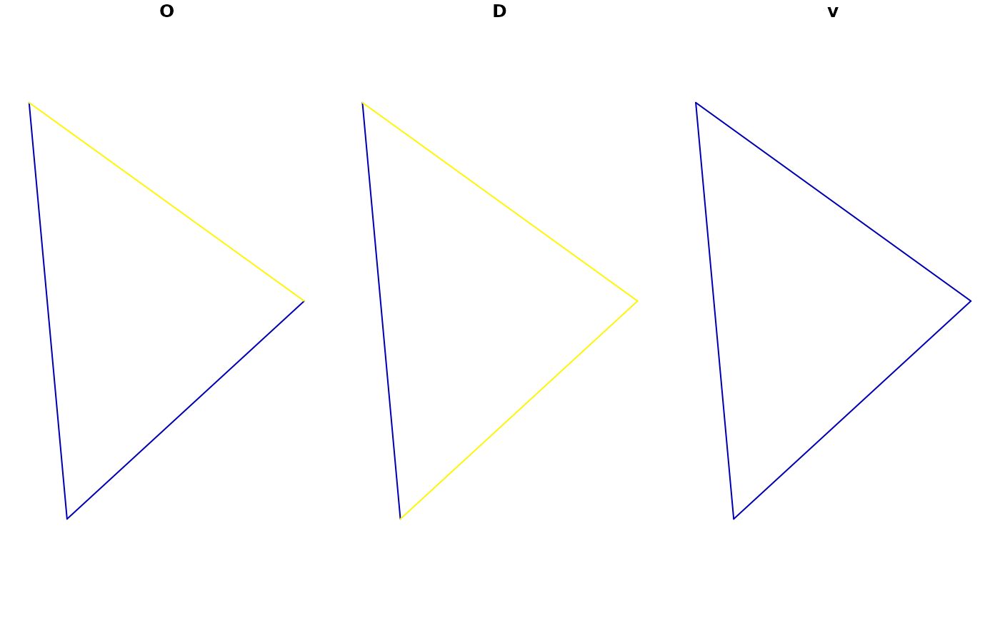

R/points_to_od.R
coords_to_od.RdTakes geographic coordinates and converts them into a data frame representing the potential flows, or 'spatial interaction', between every combination of points.
coords_to_od(p, interzone_only = FALSE, ids_only = FALSE)A spatial points object or a matrix of coordinates representing points
Should the result only include interzonal OD pairs, in which
the ID of the origin is different from the ID of the destination zone?
FALSE by default
Should a data frame with only 2 columns (origin and destination IDs)
be returned? The default is FALSE, meaning the result should also contain the
coordinates of the start and end points of each OD pair.
A data frame object with O and D codes and origin and destination coordinates.
p = sf::st_coordinates(od_data_centroids[1:3, ])
od = points_to_od(p)
(od = coords_to_od(p, interzone_only = TRUE))
#> O D ox oy dx dy
#> 2 1 2 -1.609934 53.79079 -1.624630 53.88605
#> 3 1 3 -1.609934 53.79079 -1.518058 53.84066
#> 4 2 1 -1.624630 53.88605 -1.609934 53.79079
#> 6 2 3 -1.624630 53.88605 -1.518058 53.84066
#> 7 3 1 -1.518058 53.84066 -1.609934 53.79079
#> 8 3 2 -1.518058 53.84066 -1.624630 53.88605
l = odc_to_sf(od[3:6], d = od[1:2])
l$v = 1
(l_oneway = od_oneway(l))
#> Simple feature collection with 3 features and 3 fields
#> Attribute-geometry relationships: aggregate (1), identity (2)
#> Geometry type: LINESTRING
#> Dimension: XY
#> Bounding box: xmin: -1.62463 ymin: 53.79079 xmax: -1.518058 ymax: 53.88605
#> Geodetic CRS: WGS 84
#> o d v geometry
#> 1 1 2 2 LINESTRING (-1.609934 53.79...
#> 2 1 3 2 LINESTRING (-1.609934 53.79...
#> 3 2 3 2 LINESTRING (-1.62463 53.886...
plot(l_oneway)
